5. Priame vyzvanie
Pre vytvorenie a editovanie priameho vyzvania v ISPO je potrebné, aby sme mali priradenú pracovnú pozíciu Editor výzvy.
5.1) Vytvorenie priameho vyzvania cez ISPO
5.1.1) V ľavom paneli klikneme na záložku Výzvy. Zobrazí sa zoznam výziev vytvorených pod našim orgánom (v prípade, že sme ešte nevytvorili žiadnu výzvu, zoznam bude prázdny). Klikneme na modré tlačidlo Pridať výzvu.
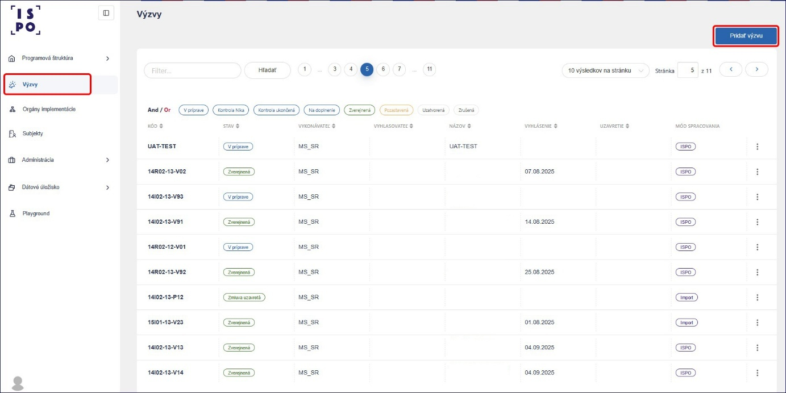
5.1.2) V prvom kroku zvolíme typ výzvy Priame vyzvanie. Následne klikneme na tlačidlo Ďalej.
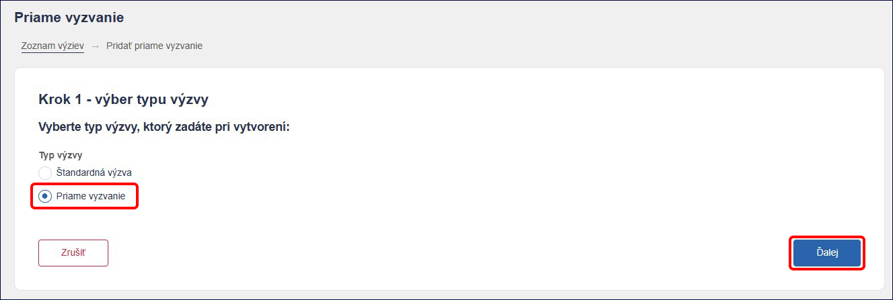
5.1.3) V druhom kroku vyberieme zo zoznamu Komponent, Opatrenie a Vykonávateľa. Pokračujeme kliknutím na tlačidlo Ďalej.
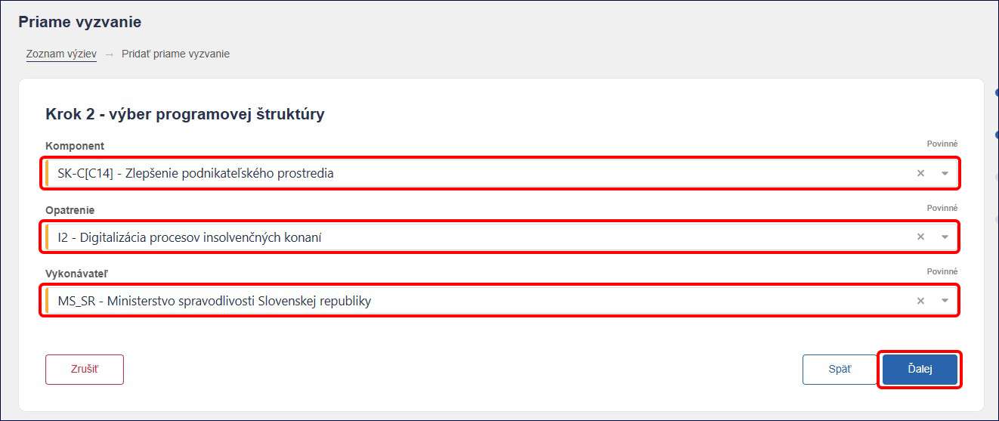
5.1.4) V treťom kroku systém automaticky vytvorí najbližší voľný kód priameho vyzvania podľa Príručky k úložisku NIKA v zložení:
Číslo komponentu -> veľké I/R -> číslo investície/reformy -> pomlčka -> číslo vykonávateľa -> pomlčka -> veľké P a poradové číslo priameho vyzvania
Príklad: 14I02-13-P59 (komponent 14, investícia 2, vykonávateľ Príkladné ministerstvo SR, priame vyzvanie číslo 59)
Tento kód v prípade potreby môžeme prepísať. Následne uvedieme Názov priameho vyzvania.
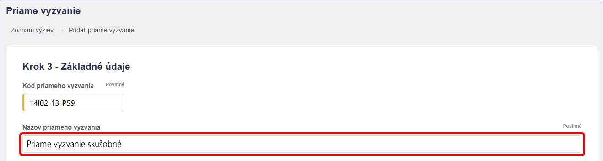
V časti prijímateľ klikneme na tlačidlo Pridať. Označíme organizáciu a do poľa Výber organizácie uvedieme názov alebo IČO organizácie. Systém ISPO spárovaný s RPO navrhne zoznam organizácií, z ktorých si vyberieme požadovanú a potvrdíme tlačidlom Pridať.
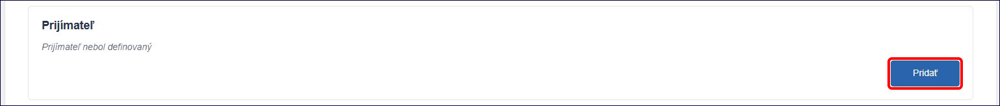

Následne môžeme vyplniť polia, ako Výška finančných prostriedkov, Schéma štátnej pomoci/pomoci de minimis, Zjednodušené vykazovanie prostriedkov a Dátum schválenia / vydania záväzného stanoviska NIKA. Pokračujeme kliknutím na tlačidlo Ďalej.
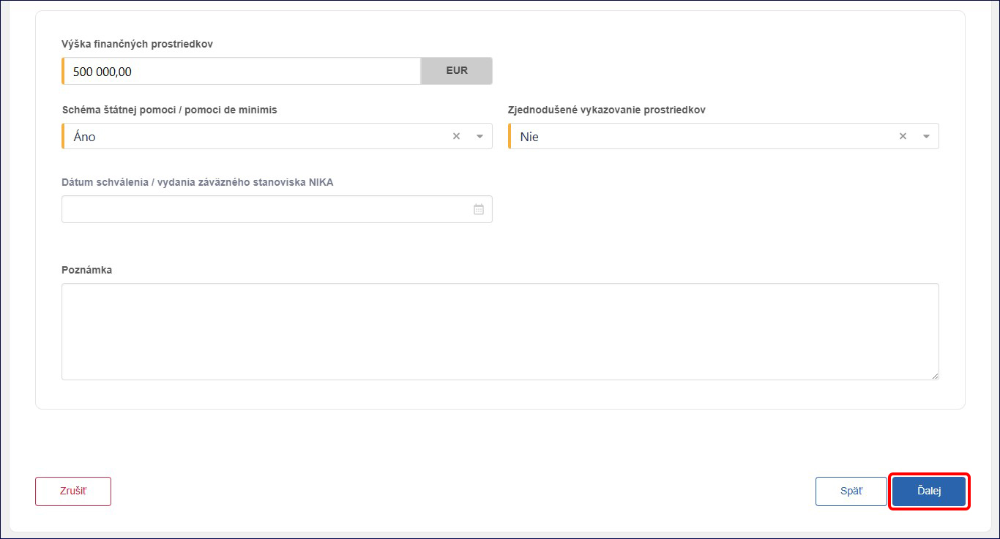
5.1.5) Štvrtý krok obsahuje zhrnutie, v ktorom môžeme skontrolovať zadané údaje. V prípade potreby sa môžeme vrátiť pomocou tlačidla Späť a údaje v predchádzajúcich krokoch upraviť. Následne pokračujeme kliknutím na tlačidlo Dokončiť.
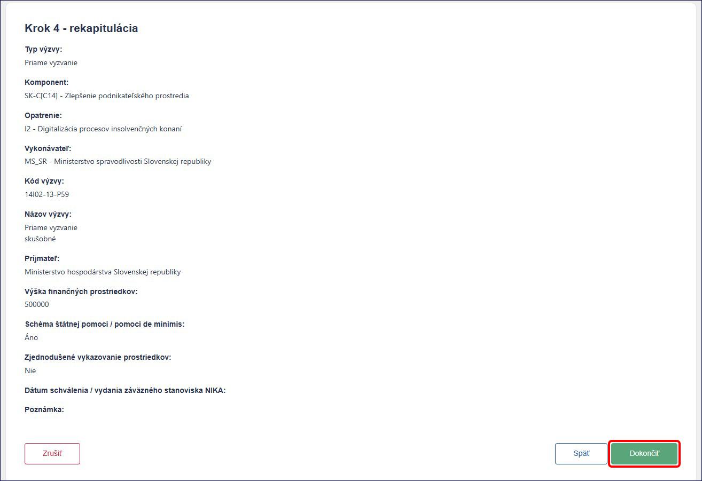
Takto vytvorené priame vyzvanie sa nám objaví v zozname výziev, vždy na poslednom mieste.
5.2) Editácia priameho vyzvania
Po vytvorení priameho vyzvania sa nám zobrazí detail vyzvania. Detail vyzvania pozostáva z jednotlivých sekcií ako:
1) Príprava priameho vyzvania
2) Stanovisko NIKA
3) Nastavenie ŽoP – povolenie podávania ŽoP na výzve
V časti Príprava priameho vyzvania môžeme vidieť základné údaje, údaje o prijímateľovi a údaje o finančných prostriedkoch, ktoré sme uviedli pri jeho vytváraní. Kliknutím na tlačidlo Upraviť v pravej časti obrazovky, sa dostaneme do editovacieho módu, v ktorom môžeme všetky tieto údaje upraviť a následne Uložiť.
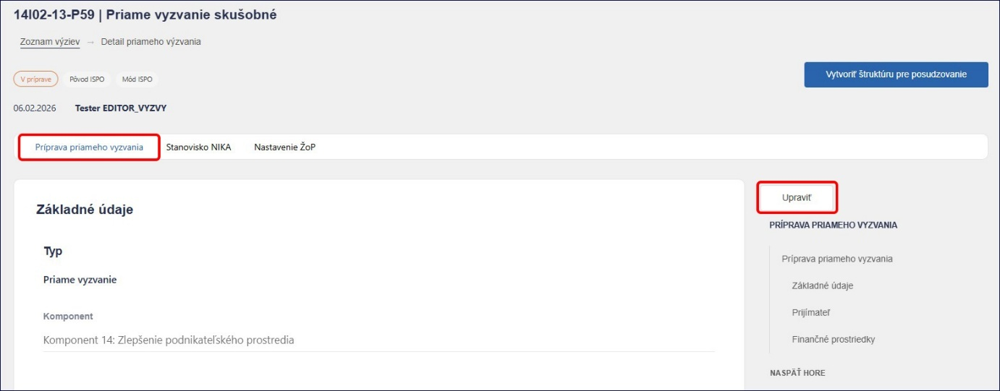
5.3) Kontrola a stanovisko NIKA, uzavretie zmluvy
Ako osoba s pracovným oprávnením Editor výzvy sme priame vyzvanie pripravili a je v stave V príprave. Pre odoslanie webového znenia priameho vyzvania na kontrolu NIKA prostredníctvom ISPO je potrebné, aby sa prihlásila osoba s pracovným oprávnením Schvaľovateľ výzvy. Ako schvaľovateľ výzvy skontrolujeme priame vyzvanie (bez možnosti editácie) a následne ho odošleme na posúdenie NIKA kliknutím na tlačidlo Odoslať.
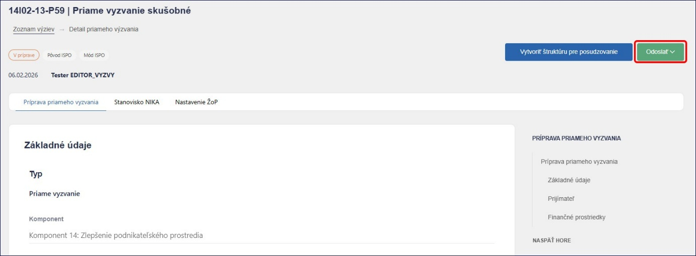
Takto odoslané priame vyzvanie získa stav Kontrola NIKA. Priame vyzvanie v tomto stave nemôžeme editovať a čakáme na stanovisko NIKA.
Po pozitívnom posúdení pracovník NIKA vydá Záväzné stanovisko NIKA. Priame vyzvanie sa dostane do stavu Pred podpisom zmluvy. Následne je potrebné, aby sa do systému prihlásila osoba s pracovným oprávnením Administrátor výzvy, s ktorou môžeme kliknúť na tlačidlo Uzavrieť zmluvu, čím sa priame vyzvanie dostane do stavu Zmluva uzavretá (priame vyzvanie sa zverejní).
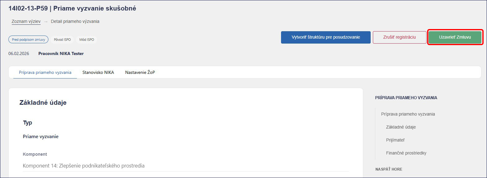
5.4) Projekt a stav zazmluvnený
Po tom ako priame vyzvanie dostaneme do stavu Zmluva uzavretá, sa v záložke Projekty automaticky vytvorí projekt, ktorý je v stave Nový. Na editáciu a zobrazenie projektu potrebujeme pracovnú pozíciu Editor ŽoP a projektu.
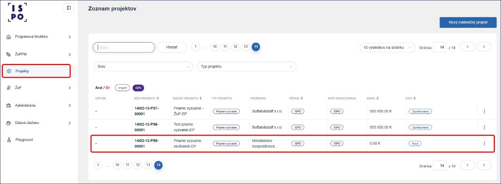
Po zazmluvnení projektu medzi vykonávateľom a prijímateľom, potrebujeme túto skutočnosť zaevidovať aj v ISPO a nastaviť stav projektu na Zazmluvnený.
Po kliknutí na vybraný projekt prejdeme do sekcie Detail projektu. V spodnej časti obrazovky klikneme na tlačidlo Upraviť, čím dostaneme projekt do editovacieho módu.
V časti Základné údaje v poli Stav zmeníme stav Nový na Zazmluvnený.
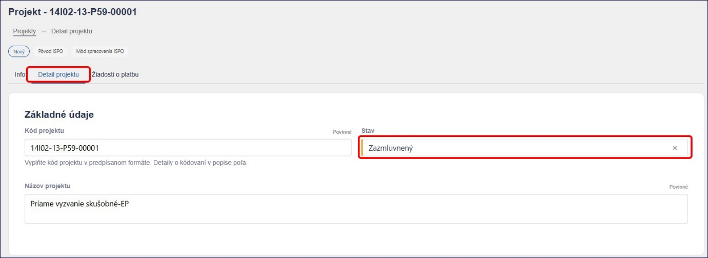
V časti Výdavky podľa zmluvy vyplníme polia pre sumy ako Suma z Plánu obnovy bez DPH, Čiastka DPH z Plánu obnovy, Suma vlastných zdrojov žiadateľa, Suma verejných zdrojov okrem zdrojov EÚ a Suma verejných zdrojov EÚ. Následne klikneme na tlačidlo Prepočítať a pole Celková suma projektu sa prepočíta automaticky.
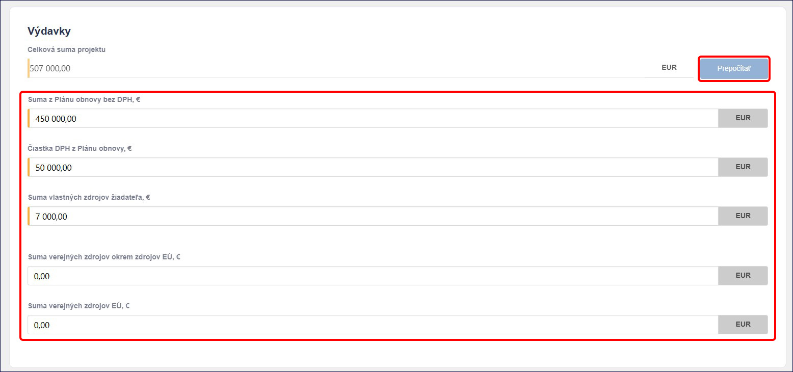
V časti Zmluva vyplníme polia ako Číslo zmluvy, Dátum platnosti zmluvy, Dátum uzavretia zmluvy, Dátum zverejnenia zmluvy v CRZ a Link CRZ. Zároveň v tejto časti kliknutím na príloha sa nám zobrazí možnosť pre nahratie súboru zmluvy.
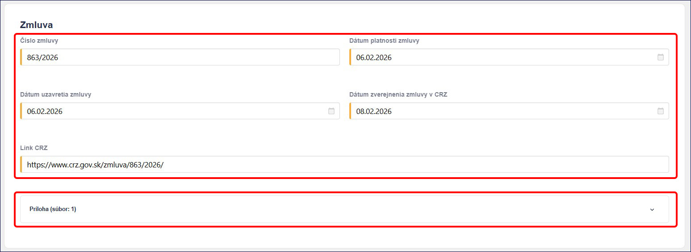
V časti Prijímateľ skontrolujeme prijímateľa zadaného na priamom vyzvaní. Doplniť môžeme aj Partnera a Poznámku. Následne všetko uložíme kliknutím na tlačidlo Uložiť. Takto pripravený projekt vidí aj prijímateľ na Portáli ISPO. Po nastavení podávania ŽoP na priamom vyzvaní bude môcť prijímateľ podať žiadosť o platbu cez Portál ISPO.
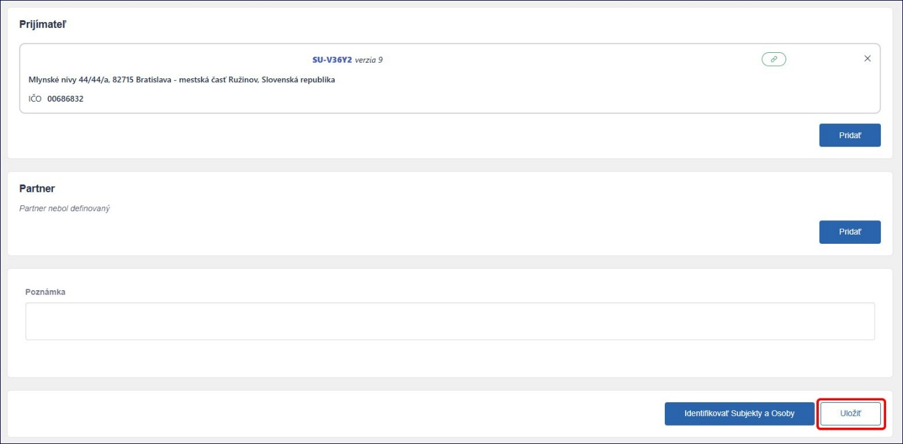
5.5) Nastavenie podávania a posudzovania ŽoP na priamom vyzvaní
Nastavenie podávania a posudzovania ŽoP na priamom vyzvaní je totožné ako na výzve a opisujeme ho v podkapitole 3.8). Na nastavenie podávania a posudzovania ŽoP na priamom vyzvaní potrebujeme pracovnú pozíciu Priraďovateľ ŽoP.